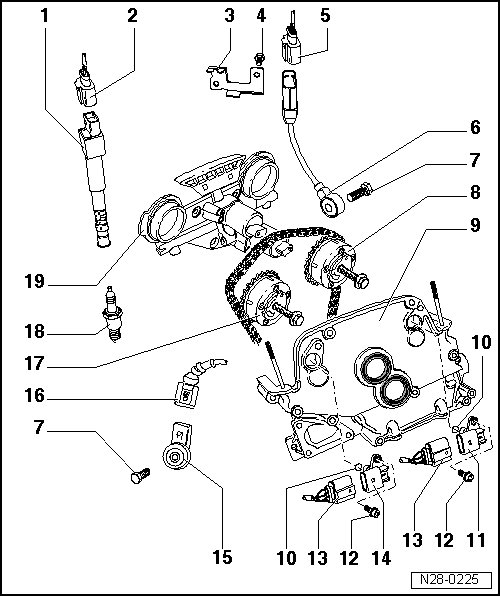

Ignition System Components, Assembly Overview
Ignition System Components, Assembly Overview

1 Ignition coil with power output stage (N70, N127, N291, N292, N323, N324)
• Remove and install using puller for ignition coil (T10095 A)
2 Connector
• Black, 4-pin
• Use assembly tool (T10118) to pull off
3 Bracket
• For harness connector of Knock Sensor (KS) 1 (G61)
4 10 Nm
5 Connector
• Black, 3-pin
• Sensor contacts and connector contacts gold plated
6 Knock Sensor (KS) 1 (G61)
• Component location: Between cyl. 1 and cyl. 3
7 20 Nm
• Tightening specifications influence the function of knock sensor
8 Exhaust camshaft adjuster
• Identification: 32A
• With sensor wheel for Camshaft Position (CMP) sensor 2 (G163)
• Installing --> [ Intermediate Driveshaft and Camshaft Drive Timing Chains, Installing ] Intermediate Driveshaft and Camshaft Drive Timing Chains, Installing.
9 Cover
• Removing and installing --> [ Cylinder Head Cover, Assembly Overview ] Cylinder Head Cover, Assembly Overview.
10 Seal
• Replace
11 Camshaft position (CMP) sensor 2 (G163)
• For exhaust camshaft
• Sensor contacts and connector contacts gold plated
12 10 Nm
13 Connector
• Black, 3-pin
• Sensor contacts and connector contacts gold plated
• Mark connector before removing
14 Camshaft Position (CMP) sensor (G40)
• For intake camshaft
• Sensor contacts and connector contacts gold plated
15 Knock Sensor (KS) 2 (G66)
• Component location: Between cyl. 4 and cyl. 6
• Sensor contacts and connector contacts gold plated
16 Connector
• Black, 2-pin
• Sensor contacts and connector contacts gold plated
17 Intake camshaft adjuster
• Identification: 24E
• With sensor wheel for Camshaft Position (CMP) sensor (G40)
• Installing --> [ Intermediate Driveshaft and Camshaft Drive Timing Chains, Installing ] Intermediate Driveshaft and Camshaft Drive Timing Chains, Installing.
18 Spark plug, 20 Nm
• Removing and installing with spark plug removal tool (3122B)
• Type and electrode gap --> [ Spark Plug Technical Data ] Application and ID.
19 Control housing
• Camshaft adjustment valves, removing and installing --> [ Camshaft Adjuster Valves ] Camshaft Adjuster Valves.
• Removing and installing --> [ Camshafts ] Camshafts.